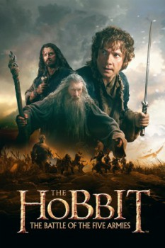

Country:United States, 144 minutes
Spoken languages:English
Genres:Action, Adventure, Fantasy
Director(s):Peter Jackson
Writer(s):J. R. R. Tolkien, Guillermo del Toro, Philippa Boyens, Fran Walsh, Peter Jackson
Video Codec:Unknown
Number: 1732

Certification:
Storyline:
Following Smaug's attack on Laketown, Bilbo and the dwarves try to defend Erebor's mountain of treasure from others who claim it: the men of the ruined Laketown and the elves of Mirkwood. Meanwhile an army of Orcs led by Azog the Defiler is marching on Erebor, fueled by the rise of the dark lord Sauron. Dwarves, elves and men must unite, and the hope for Middle-Earth falls into Bilbo's hands.
Cast:
Ian McKellen (as Gandalf the Grey), Martin Freeman (as Bilbo Baggins), Richard Armitage (as Thorin Oakenshield), Orlando Bloom (as Legolas), Evangeline Lilly (as Tauriel)
Medium: Media file,
Location: D:\Hobbit\The Battle of The Five Armies.mp4
Loaned: No
Aspect ratio: Unknown